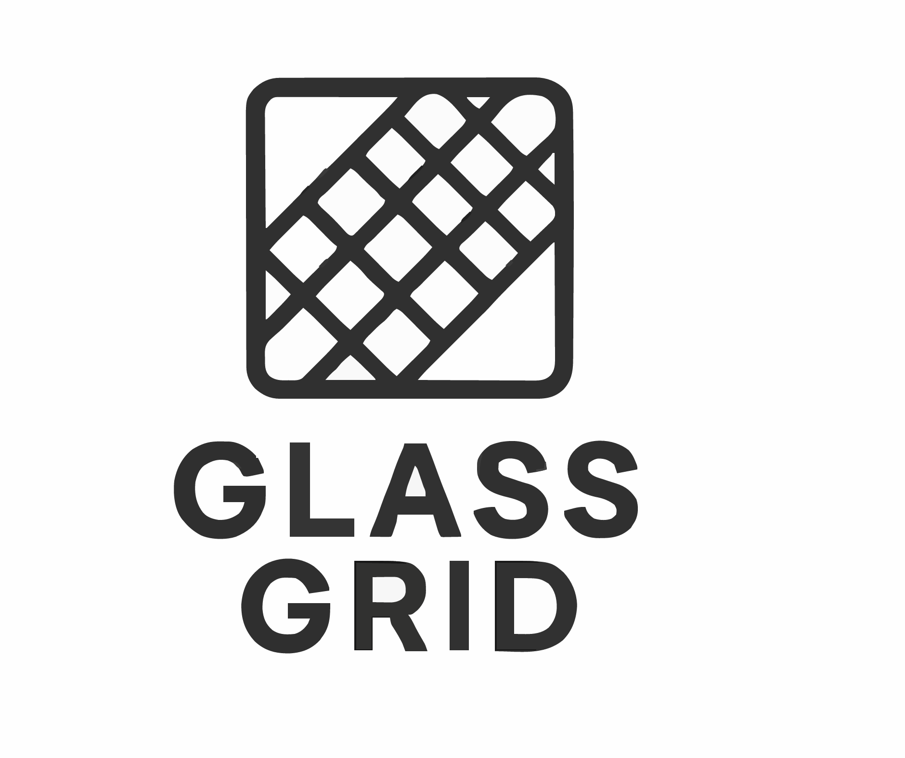

Datorika 2025 / 2026
Skolēns · Rīgas Valsts 1. Ģimnāzija
Šis ir mans portfolio, kurā apkopoti projekti un stundu darbi, ko apguvām šajā mācību gadā. Tā pat šī mājas lapa kalpo, kā programmēšanas valodas HTML un CSS noslēguma darbs.
01
Pirmajā šī gada tēmā bija rastra grafika, kurā mēs aplūkojām rastra grafikas pamatus izmantojot programmu Gimp. Tēmas mēs beigās mēs izveidojām animāciju, par tēmu, kas mums tika iedalīta, tādā veidā nostabiliējot mūsu prasmes rastra grafikā.
02
Pēc rastra grafikas mēs apguvām vektorgrafiku. Iepazināmies ar atšķirībām, kādas ir starp rastra un vektorgrafiku, kā arī iepazināmies ar nozarēm, kurās izmanto katru no dizaina viedošanas veidiem. Kā šīs tēmas projekts bija izveidot logo, priekš uzņēmuma, kura apraksts mums tika iedalīts un, izmantojot dator programmu Inkscape izveidot logo, kas būtu atbilstoš šajam uzņēmumam, un arī vajadzēja pamatot, kādēļ izvēlējāmies tieši šadu dizainu.

03
Šajā tēmā apguvām 3D modelēšanas pamatus, izmantojot tīmekļa rīku Tinkercad. Kā projekta darbu mums vajadzēja izveidot kubiņi, kas ir saliekams kā puzle, kurs uz katras malas ir ieoriekš'jā tēmā izveidotā logo dizains, pēc to vajadzēja izdrukāt ar 3D printeri un atrādīt skolotājai gatavo produktu. Tēmas noslēgumā izveidojām arī īsu filmiņu par visu procesu no modelēšanas līdz drukāšanai, izmantojot jebkādu video rediģēšanas programmu. Es izmantoju plaši zināmo programmu Davinci Resolve.
04
Šajā tēmā Microsoft programmā Word mācījāmies, kā pareizi noformēt dokumentu, lai tas atbilstu ZPD formātam. Pēc tam Excel apguvām, kā ātri un efektīvi sakārtot datus tabulās, izmantot formulas, veikt aprēķinus un attēlot rezultātus diagrammās. Šīs prasmes mums palīdzēs laboratorijas darbu protokolu izveidē.
📊
ATTĒLS
05
Šajā tēmā apguvām programmēšanas valodu HTML un CSS pamatus, mācījāmies, kā veidot mājaslapas struktūru un noformējumu. Nedaudz iepazināmies arī ar Git, kā arī iemācījāmies publicēt mūsu mājaslapas internetā, izmantojot GitHub. Šī mājaslapa ir šīs tēmas noslēguma projekts.
💻
ATTĒLS
Mani sauc Eduards Dričs, man ir 16 gadi. Mācos Rīgas Valsts 1. ģimnāzijā 10. klasē fizikas novirzienā. Aktīvi piedalos matemātikas un fizikas olimpiādēs un veidoju attiecības ar cilvēkiem visdažādākajās nozarēs.
No šī gada apgūtajām tēmām man vislabāk patika 3D modelēšana un programmēšana. Tad nāca Excel un Word, kas man sniedza praktiskas prasmes, ko pielietot citos skolas priekšmetos. Visbeidzot rastra un vektorgrafika, tās bija informatīvas tēmas, toties nevarēju saredzēt, kur es izmantošu šīs prasmes nākotnē.
Ar programmēšanu un 3D modelēšanu nodarbojos arī ārpus skolas, brīvajā laikā. Mājas mājās veidojo visdažādākos projektus, realizēju savas idejas un eksperimentēju ar jaunām tehnoloģijām. Pašlaik strādāju pie diviem ambicioziem projektiem: vēja tuneļa izveide un homlab servera izveides. Šie projekti man palīdz tālāk attīstīt savas prasmes nozarēs, kuras man interesē un kuras būtu pieprasītas nākotnē, kā arī sniedz man iespēju papildināts manu CV. Katrs pabeigts projekts mani iedrošina sākt jaunu un turpināt attīstīties.
Prasmes
Šī gada datorikas stundās mums bija 5 lielās tēmas - Rastra grafika, Vektorgrafika, 3D modelēšana, Excel / Word un viss beidzot arī programēšanas
Četrām no šīm tēmām bija arī projekti, kurus pildījām un papildinājām visu tēmas laiku. Katrs no projektiem prasīja dažādas iemaņas un prasmes, kuras apguvām stundu laikā. Dažos no šī projektiem man gāja vieglāk dažos grūtāk, jo pāris iemaņas biju mācijies pamatskolā. Toties dažas bija jāmācās no jauna, kā arī dažas no tēmām likās interesantākas nekās citas.
Šajā diagrammā ir attolotas mans pašvērtējums, kā man liekas, cik labi es apguvu dotās tēmās, un cik labi es varētu pielietot iemācītās prasmes nākotnē.